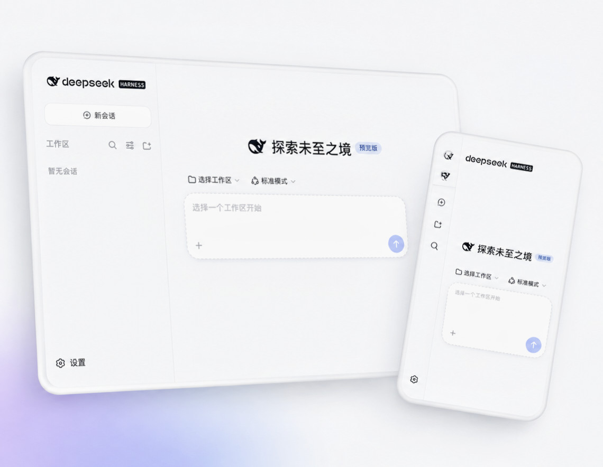
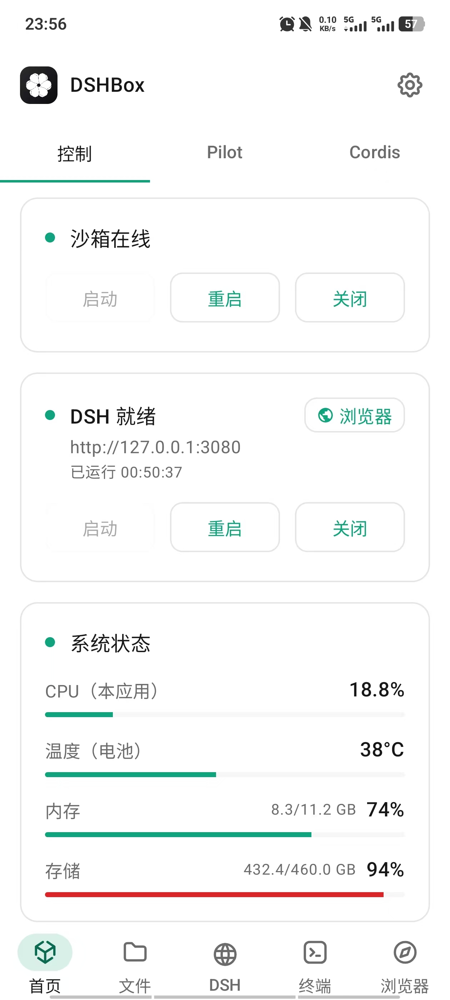
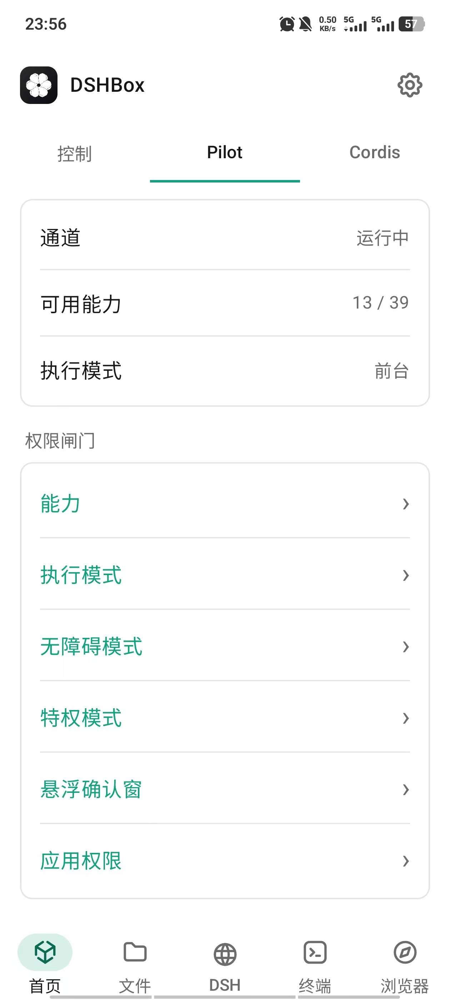
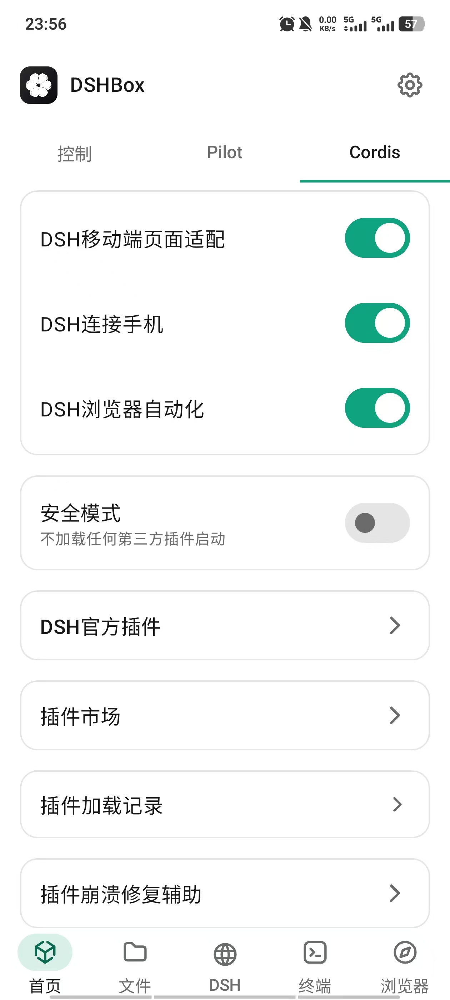
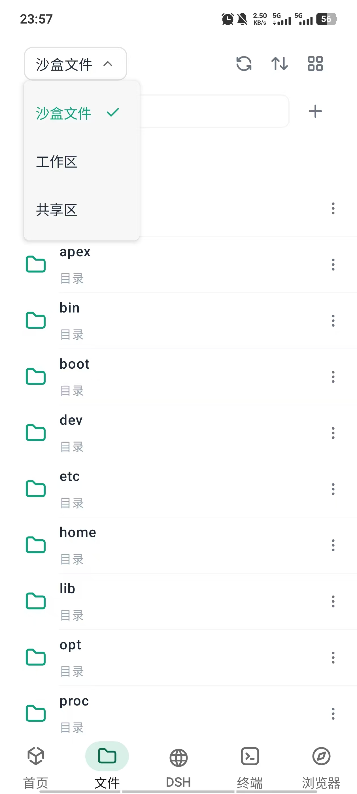
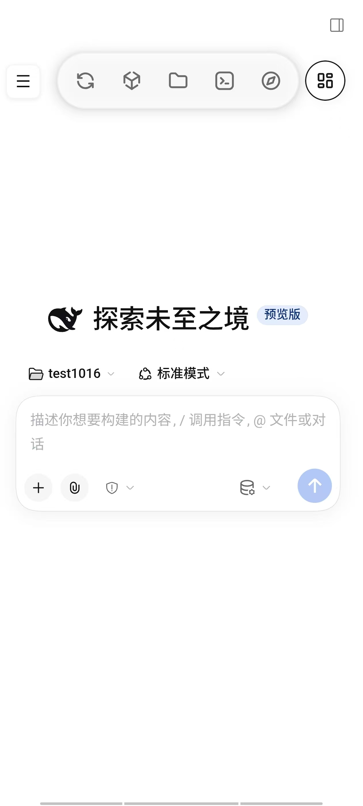
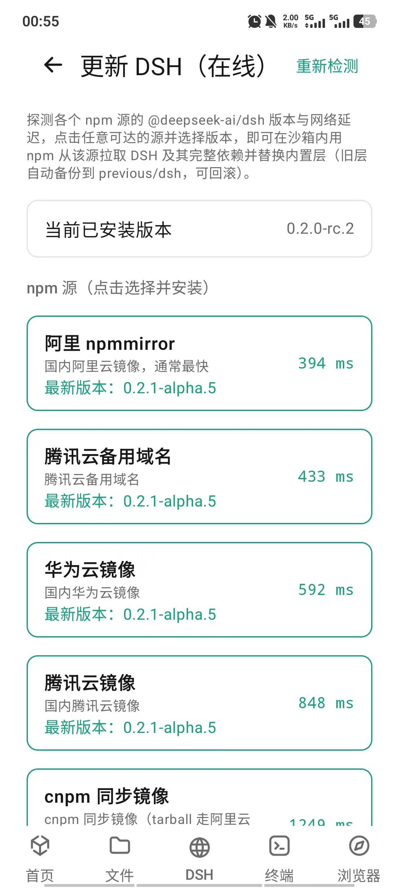
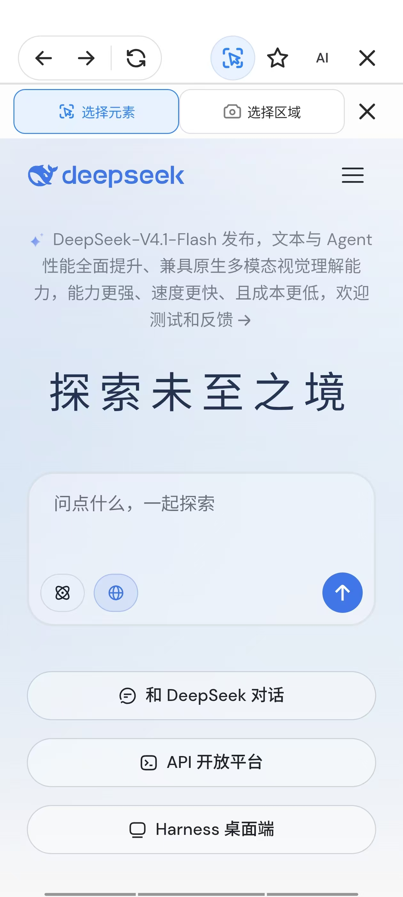
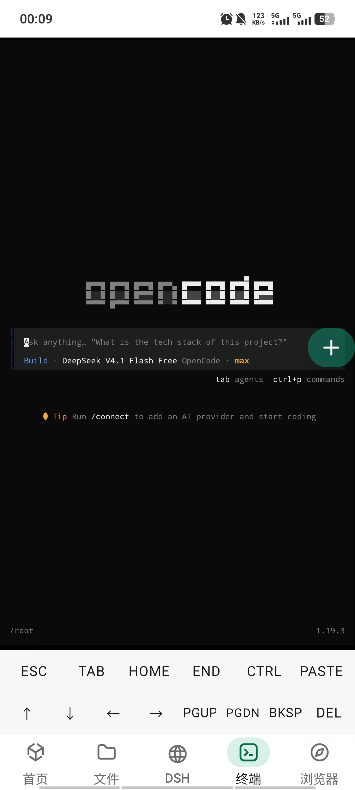

Complete DSH Workbench完整 DSH 工作台
Run DSH locally on Android. Use sessions, agents and tools through the embedded WebUI, with full-screen chat and quick navigation. 在 Android 本机运行 DSH，通过内嵌 WebUI 使用会话、Agent 与工具调用，配合全屏对话和快捷导航。
Open source · GPL-3.0 · Community project 开源 · GPL-3.0 · 社区项目
The Android mobile client for DeepSeek Harness (DSH) — run the full harness completely on-device, on phones and tablets. DeepSeek Harness（DSH）的安卓移动端——在手机与平板上完全本地化、完整运行 DSH。
An AI workbench with a browser assistant, phone tools, shared files and a terminal. Guided runtime setup, no root or separate Termux required. 集成 AI 浏览器助手、手机助手、系统文件共享区与终端。按引导安装运行环境，无需 Root，也无需单独安装 Termux。
Checking the latest release… 正在获取最新版本…

Features核心功能
Set up your runtime with guided steps, then use DSH, browser automation and local tools from one app. 按引导准备运行环境，在一个 App 中连接 DSH、浏览器自动化与本地工具。
Run DSH locally on Android. Use sessions, agents and tools through the embedded WebUI, with full-screen chat and quick navigation. 在 Android 本机运行 DSH，通过内嵌 WebUI 使用会话、Agent 与工具调用，配合全屏对话和快捷导航。
Let DSH navigate and interact with web pages through browser-use. Share selected elements or areas with comments, and enable debugging when needed. 通过 browser-use 让 DSH 导航与操控网页，框选元素或区域并附评论反馈给 AI，按需开启调试。
Connect DSH to phone apps and system capabilities through foreground control, Shizuku and virtual displays, subject to your permissions and approvals. 连接手机应用与系统能力，支持前台操作、Shizuku 与后台虚拟屏，按你设置的权限与审批执行。
Browse your workspace and sandbox, view and edit files, and run command-line tools from the built-in persistent terminal. 浏览工作区与沙箱，查看和编辑文件，通过内置持久终端运行命令行工具。
Mount system folders to share local files with the sandbox. Receive and send files across apps; unmounting leaves the originals intact. 挂载系统目录，在手机应用与沙箱间共用本地文件；接收和分享外部文件，取消挂载不删除原文件。
PRoot runs Debian in user space. Follow the setup guide in DSHBox, with no root access or separate Termux installation. PRoot 提供免 Root 的 Debian 用户态环境，安装准备在 DSHBox 内完成，无需单独安装 Termux。
Use DSHBox on Android phones and tablets, with layouts that adapt from compact screens to larger landscape displays. 支持 Android 手机与平板，从小屏到大屏横屏提供适配布局。
Core code is open under GPL-3.0. Manage workspaces and services locally, with model providers and file sharing chosen by you. 核心代码以 GPL-3.0 开源，工作区与服务在本地管理，模型服务和文件分享由你选择。
Screenshots产品截图
Real captures from a running device — how DSHBox hosts and extends the DSH ecosystem, and the facilities that keep it usable every day. 真机实拍画面——DSHBox 对 DSH 生态的容纳与扩充，以及让它日常好用的配套设施。
Home, phone tools and files首页、手机助手与文件管理




DSH, browser and terminalDSH、浏览器与终端




How It Works工作原理
Five layers, all on your device. 五层结构，全部在你的设备上完成。
DSHBox starts and manages the whole environment.DSHBox 启动并管理整个环境。
A user-space Debian distribution, no root required.用户态 Debian 发行版，无需 Root。
DSH runs on Node.js installed through the setup guide.DSH 运行在按引导安装的 Node.js 之上。
The Harness serves its WebUI on 127.0.0.1:3080.Harness 在 127.0.0.1:3080 提供 WebUI。
You interact through the app or any local browser.通过 App 或任意本地浏览器交互。
Requirements系统要求
Measured on a recent release build. 基于近期 Release 构建实测数据。
The button below always resolves to the latest APK from GitHub Releases. If the API is unreachable, you can still download manually from the Releases page. 下方按钮始终解析 GitHub Releases 上的最新 APK。若 API 加载失败，仍可通过 Release 页面手动下载。
Checking the latest release… 正在获取最新版本…
FAQ常见问题
Common questions about running DSH on Android. 关于在 Android 上运行 DSH 的常见问题。
No. DSHBox uses PRoot to provide a Debian user-space environment without rooting your device. 不需要。DSHBox 使用 PRoot 提供免 Root 的 Debian 用户态环境。
No. DSHBox includes DSH and PRoot, and guides you through Debian and Node.js installation or offline import. There is no Termux dependency. 不需要。DSHBox 随包提供 DSH 与 PRoot，并引导安装或离线导入 Debian、Node.js，无需依赖 Termux。
Yes. DSHBox has been tested on Android phones and tablets, and the WebUI adapts to larger screens. 支持。DSHBox 已在手机与平板上测试，WebUI 会自动适配大屏。
No. The current build targets ARM64 devices only. 不支持。当前构建仅面向 ARM64 设备。
No. DSHBox is Android-only. iOS does not allow the kind of local runtime environment DSHBox relies on. 没有。DSHBox 仅支持 Android，iOS 不允许此类本地运行时环境。
Sessions and workspaces use app storage by default. Shared folders stay in system storage and are not automatically deleted on uninstall. Model calls and websites use the services you choose. 会话与工作区默认位于应用存储；共享目录保存在系统存储中，卸载 App 不会自动删除其中内容。模型调用与网页访问使用你选择的服务。
The bundled version is 0.2.0-rc.2. Use Settings → Update DSH to check online mirrors. Back up before trying Alpha versions: reverting to RC can cause conversation-data incompatibility. 随包版本为 0.2.0-rc.2，可在设置 → 在线更新 DSH 中选择镜像源升级。体验 Alpha 前请备份，回退 RC 可能出现对话数据兼容问题。
Use the built-in file manager or your device's file transfer tools to copy the workspace directories out of DSHBox's storage. Keep regular copies before upgrading. 使用内置文件管理器或系统文件传输工具，把工作区目录复制到 DSHBox 存储之外；升级前请保留副本。
No. PRoot provides a user-space Linux environment, not a kernel-level sandbox. Do not use it to run untrusted code. 不是。PRoot 提供的是用户态 Linux 环境，不是内核级沙箱，请勿用它运行不受信任的代码。
No. DSHBox is an independent open-source community project for DeepSeek Harness. It is not affiliated with or endorsed by DeepSeek. 不是。DSHBox 是面向 DeepSeek Harness 的独立开源社区项目，与 DeepSeek 无隶属或背书关系。
DSH is short for DeepSeek Harness. DSHBox is the Android/mobile client for DSH — sometimes written as dsh-android or dsh-mobile — and runs the full DeepSeek Harness locally on your phone or tablet from a single APK. DSH 是 DeepSeek Harness 的简称。DSHBox 就是 DSH 的安卓/移动端客户端，有时也写作 dsh-android 或 dsh-mobile——只需一个 APK，即可在手机或平板上本地完整运行 DeepSeek Harness。